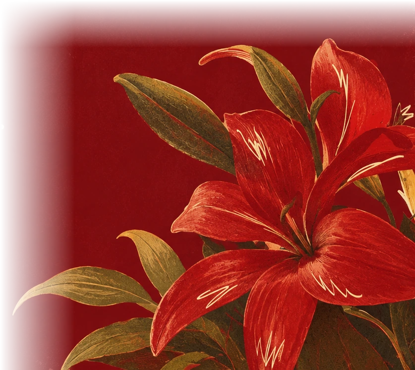

— SOBRE O ENTRELINHAS
há sentimentos que só a música sabe dizer.
A música é uma das formas mais bonitas de expressar aquilo que sentimos. Ela dá voz ao que, muitas vezes, o coração não consegue colocar em palavras.
E se existe tanta beleza em sentir, por que não compartilhar?
porque sentir também é compartilhar. ♡

UMA COLEÇÃO DE SENTIMENTOS
versos que ficam.
às vezes, uma canção encontra as palavras por nós.
em algum lugar da memória, ainda estamos dançando.
um verso de cada vez, no tempo do coração.